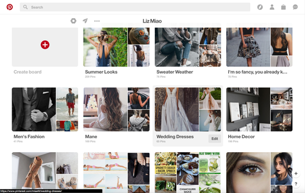

Post 2

Prompt: Critique a web-based fomr that you use often.
I use Pinterest a lot as inspiration for fashion choices and cool DIY projects when I have that occasional few hours to spare. This site refreshes my creative juices to new ideas and I really enjoy looking at aesthetic pictures. This website is very user-friendly in that it really simple to navigate around. There are a lot of different categories which help users expect specific content from specifici categories. This site allows me to 'pin' different categories of great aesthetic ideas in different 'boards', so I wouldn't need to scroll through food recipes when I'm trying to find a good sweater to pair with my new jeans.
Post 1

Prompt: Evaluate a user interface that you use often in terms of the visual design, appeal and effectiveness. This is an opportunity to comm-unicate your ideas and pespectives on effective interface design.
A user interface that I often use often is the Google search engine. The visual design is aesthetically pleasing for it’s purpose. It’s very clean and easy to read, and the Google banner changes everyday, informing the users of special holidays and birthdays that should be honored. The Google search engine is also very quick to load and gives the users previews of the context in the page. The website is also very compatible with cellphones, making it really easy to navigate on the mobile view. There are tabs for easy access to shopping, images, videos, etc. What I’ve really liked about the Google search engine is when I try to search a celebrities age, a box will pop up with all the information a user would potentially want to know about the celebrity like his/her age, height, birthday, relatives, appearances. I think that Google’s user-interface is very user-friendly and easy on the eyes. The spacing of all the words and search results help make it the most popular search engine.